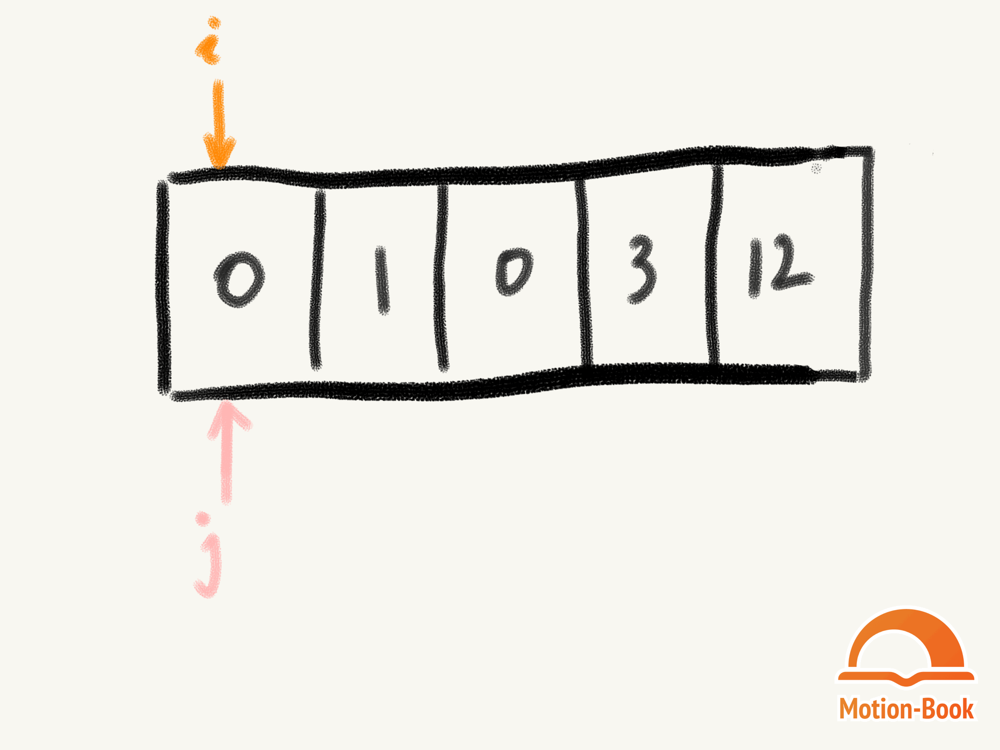
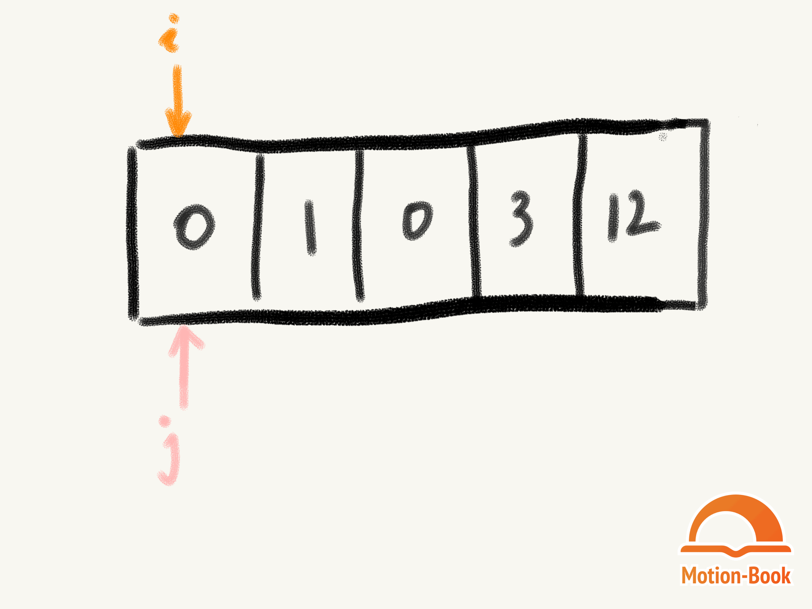

今天做一道数组 双指针的算法题目。(题目来源，LeetCode283)
题目
移动零
给定一个数组 nums，编写一个函数将所有 0 移动到数组的末尾，同时保持非零元素的相对顺序。
示例
输入：[0,1,0,3,12]
输出：[1,3,12,0,0]
要求
- 必须在原数组上操作，不能额外拷贝数组
- 尽量减少操作
思路
- 采用双指针，将非零元素逐个赋值到当前数组中
- 非零元素赋值完成后，将后续元素赋值为 0.
解答题目
1 | /** |
动图了解下～

今天做一道数组 双指针的算法题目。(题目来源，LeetCode283)
移动零
给定一个数组 nums，编写一个函数将所有 0 移动到数组的末尾，同时保持非零元素的相对顺序。
示例
输入：[0,1,0,3,12]
输出：[1,3,12,0,0]
要求
1 | /** |
动图了解下～
